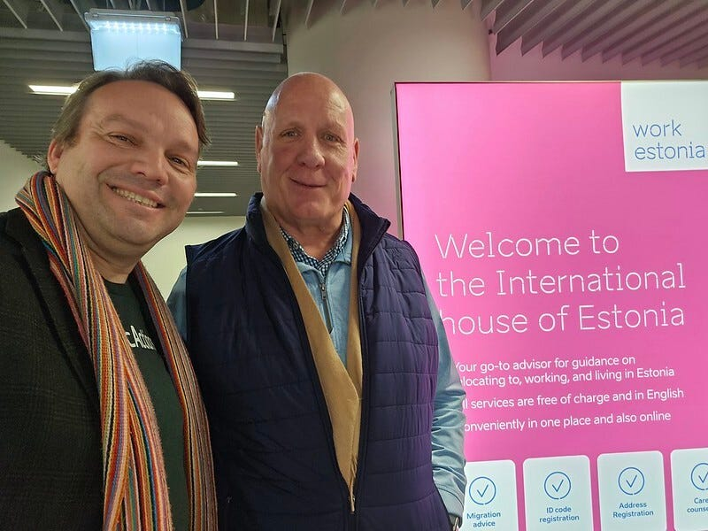
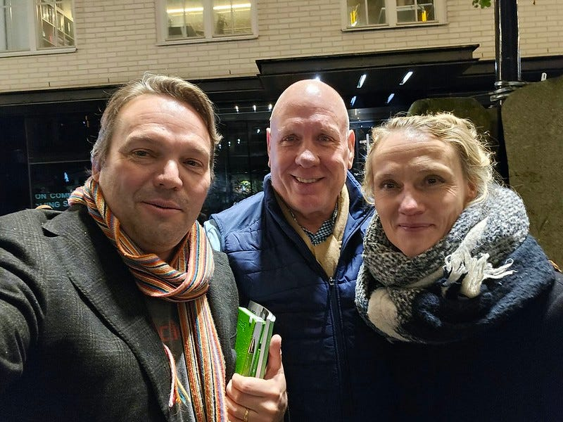
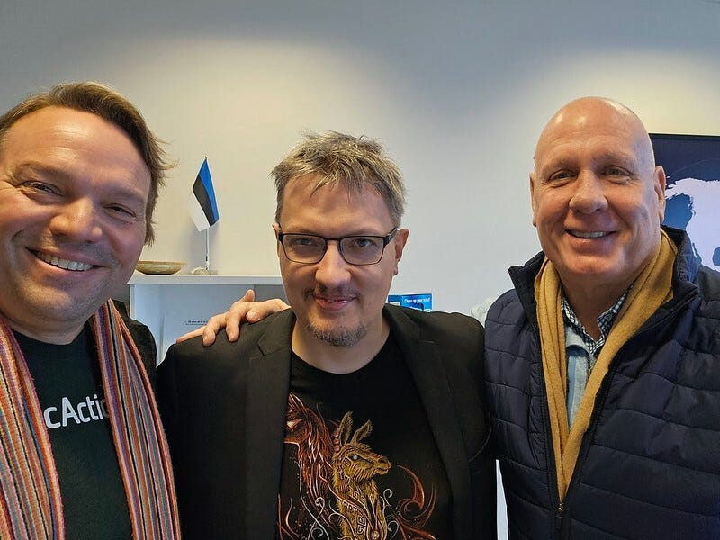
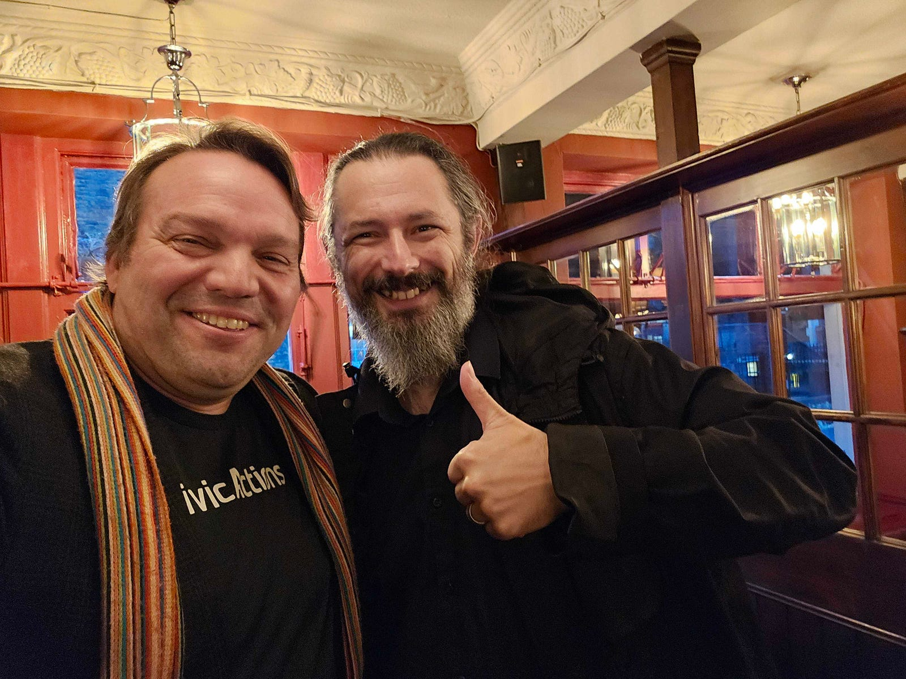

CivicActioners Mike Gifford, Open Standard and Practices Lead, and Bill Ogilvie, Chief Growth Officer, recently embarked on a tour of Estonia and the UK, diving deep into the world of Digital Public Goods (DPGs) to explore how collaborative, open-source technology can revolutionize government digital infrastructure and foster a global network of innovative public service delivery.
Connecting Global Digital Innovators
The trip was a strategic dialogue and learning mission with some of the world’s most forward-thinking digital governance experts. From meeting with former government technology leaders in Estonia to engaging with procurement innovators in the UK, our team discovered a shared vision: technology should serve the public good through openness, collaboration, and reusability.

Understanding Digital Public Goods
Digital Public Goods are more than software — they’re a paradigm shift in how governments approach technological investment. Instead of each agency developing isolated solutions, DPGs enable:
- Reusability: Tools that can be adapted across agencies and countries
- Cost-Efficiency: Maximizing the impact of public technology spending
- Collaboration: Creating a global ecosystem of shared digital resources
Per the Digital Public Goods Alliance website, “According to the UN Secretary General’s Roadmap for Digital Cooperation, digital public goods are open-source software, open standards, open data, open AI systems, and open content collections that adhere to privacy and other applicable laws and best practices, do no harm, and help attain the Sustainable Development Goals (SDGs).”
Drupal, a free and open source software (FOSS) that we frequently utilize to kick-start digital transformations, is a certified Digital Public Good and exemplifies the DPG philosophy — a FOSS content management system that allows agencies to create scalable, secure websites without starting from scratch.
Estonia: Pioneering Open Infrastructure

Estonia has become a global model of digital transformation. Mike and Bill’s conversations with former government technology leaders revealed a forward-thinking approach to government technology. Estonia’s digital journey, including technical initiatives like the X-Road interoperability framework and educational investments like the e-Estonia Briefing Centre, also illustrates how even smaller-scale projects can drive large-scale digital transformations. Estonia is a country of just over a million people, and yet has advised governments around the world on how to build modern digital systems. Our visit highlighted the impact of these scalable solutions to reshape government services.
The Estonian model proves that even smaller nations can drive global technological innovation through openness and strategic thinking.
Championing Transparent Digital Services in the UK

The UK’s Government Digital Service has been a global leader in defining what it means to be a modern digital government. Meetings with current and former digital leadership, procurement champions, and experts in government accessibility and sustainability uncovered a multifaceted strategy:
- Innovative Procurement: Aligning purchases with DPG principles
- Accessibility: Ensuring digital services serve every citizen
- Sustainability: Reducing the environmental impact of digital infrastructure
- Ethical AI: Maintaining public trust through transparency
Key Outcomes and Insights
Our international exploration crystallizes a compelling future vision for U.S. Federal technology investment. By embracing Digital Public Goods, we can:
- Eliminate technological redundancy
- Accelerate innovation through global collaboration
- Rebuild public trust in government through technology
- Create more inclusive and adaptable digital services
Conclusion: Reimagining Government Technology
Digital Public Goods represent more than a technological strategy — they’re a commitment to a more transparent, efficient, and equitable digital future. By learning from global leaders like Estonia and the UK, we can transform government technology into a collaborative, adaptive ecosystem that truly serves the public good.
The journey has just begun. Together, we can build a digital infrastructure that empowers citizens and maximizes public investment.